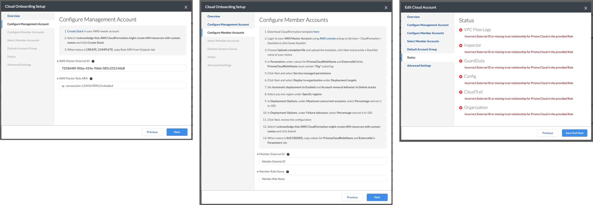
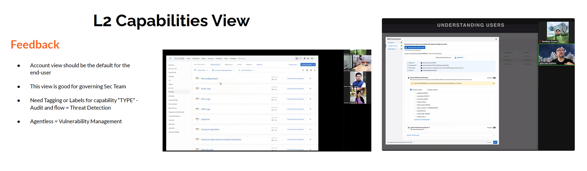
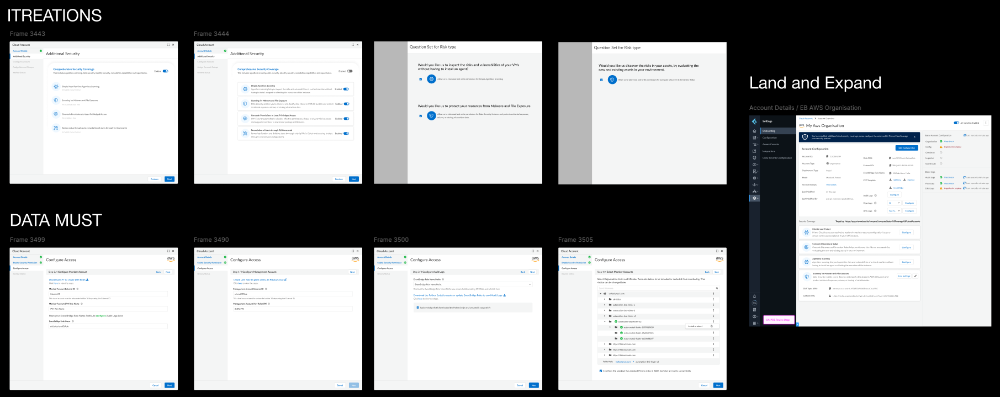
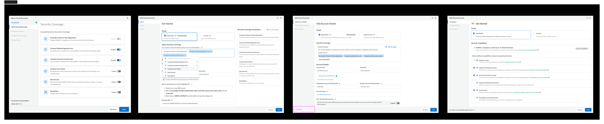
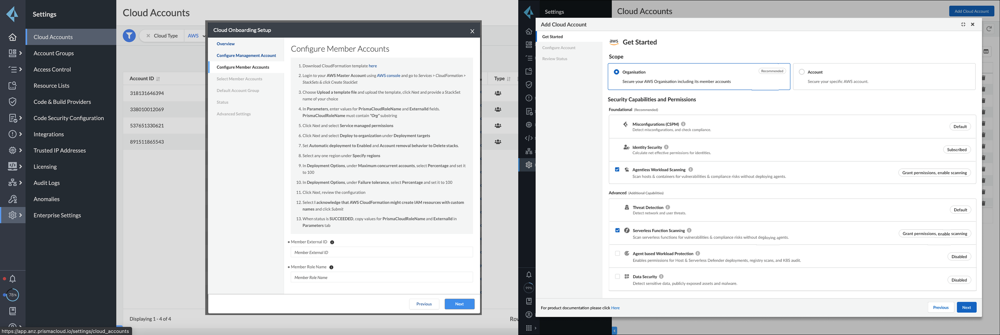
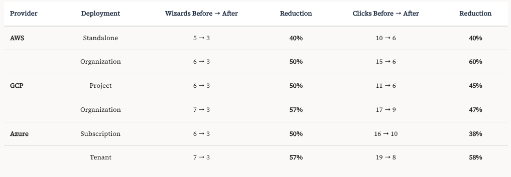

Quick context for recruiters
This redesign addressed onboarding drop-offs caused by fragmented provider-specific wizards. The goal was to reduce setup complexity while building confidence and enabling scalable onboarding across future modules.
Project Details
- Company: Palo Alto Networks
- Product: Prisma Cloud
- Scope: Multi-cloud onboarding (AWS, Azure, GCP)
- Timeline: 2021–2024
- Users: IT Ops, Cloud Security Admins, DevSecOps
My Role
- Role: Principal Product Designer
- Ownership: UX strategy + IA + interaction model + validation
- Collaboration: PM, Engineering, Customer Success
- Key output: unified onboarding framework usable by multiple teams
Onboarding was the activation gate for the platform
Prisma Cloud onboarding had grown organically into inconsistent, fragmented flows. Each cloud provider used a different wizard and interaction pattern, creating confusion and drop-offs during setup.
The Challenge
AWS, Azure, and GCP onboarding flows ranged from 8 to 10 steps with separate UI patterns and terminology. Customers struggled to complete setup without external documentation or support involvement.
- Inconsistent workflows across providers
- Too many manual decisions early in setup
- No confidence indicators or clear progress state
Success Criteria
The redesigned onboarding experience needed to reduce cognitive load while supporting enterprise requirements, validations, and scalable expansion across modules.
- Unify onboarding mental model across providers
- Reduce steps and screens significantly
- Improve adoption and reduce drop-offs

What customers revealed during validation
Research focused on understanding where enterprise users dropped off and what mental model they expected. Sessions were validated with Informatica, Unacademy, and Nvidia.
Research Methods
- Contextual inquiry with enterprise teams
- Workflow walkthrough sessions
- Comparative flow benchmarking across providers
- Stakeholder + customer success insights
Key Findings
- Users needed confidence, not more documentation
- Progress state was unclear and inconsistent
- Errors lacked remediation guidance
- Users expected one mental model across providers

A unified mental model was the real requirement
The problem wasn’t only “too many steps.” The real breakdown was inconsistency: customers could not predict the experience across AWS, Azure, and GCP.
- Problem: onboarding lacked consistency and clarity
- Impact: setup drop-offs reduced activation and expansion
- Opportunity: create a scalable onboarding framework reusable across modules

Multiple models explored before unification
Early exploration focused on identifying a provider-agnostic structure. The goal was to create an onboarding model that worked for all providers without increasing engineering complexity.
Option A — Provider-specific wizard
Rejected. This would preserve inconsistency and require users to relearn onboarding for every provider.
Option B — Unified onboarding framework
Chosen. A single model with progressive disclosure and validation built-in created consistency and scalability.

From 8–10 step wizards to a validated 3-step modal
The interaction model evolved through multiple iterations. Each version focused on reducing cognitive load, improving progress visibility, and supporting recovery from failures.
- Introduced progressive disclosure to reduce early decision overload
- Standardized terminology and step structure across providers
- Added validation checkpoints and remediation guidance
- Designed scalable pattern for future onboarding modules


A unified 3-step onboarding framework
The final experience consolidated onboarding into a cloud-agnostic 3-step modal. Users could onboard AWS, Azure, and GCP with the same predictable structure.
Step 1 — Get Started
- Clarified prerequisites and scope
- Introduced confidence-building guidance
- Reduced ambiguity early in setup
Step 2 — Configure Details
- Provider-specific inputs surfaced only when needed
- Standardized form layout and error messaging
- Validation readiness built into flow
Step 3 — Review Status
- Clear validation results
- Remediation guidance for failures
- Success confirmation and next-step recommendations
Scalable Framework
- Reusable modal framework for other teams
- Consistent onboarding patterns for new modules
- Reduced future UX inconsistency risk


Business outcomes and adoption impact
The unified onboarding framework reduced friction, improved completion rates, and accelerated customer activation across modules.
- 57% reduction in onboarding screens
- 60% reduction in total clicks
- 150% increase in credit consumption within 6 weeks
- 8× improvement in customer sentiment scores
- 120% growth in agentless feature adoption

"This is exactly what builds our confidence in Prisma Cloud. This simplifies our effort as we plan to add more accounts in the next few months."— Informatica
Full Case Study
Download the full case study PDF for detailed design process, interaction flows, and research findings.